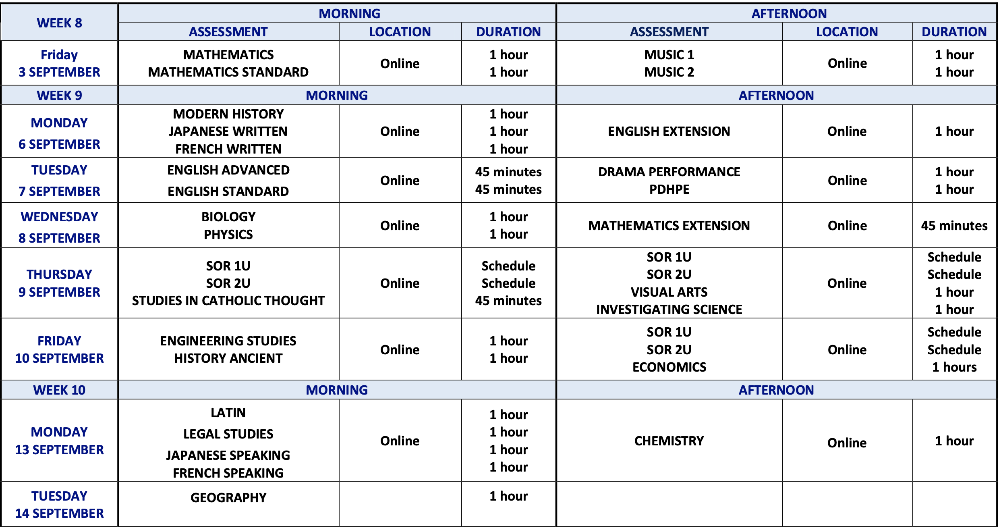
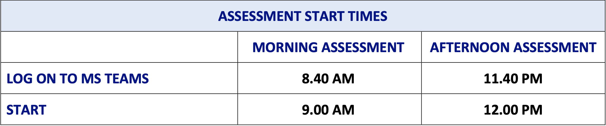

Having problems?
- When receiving the assessment if you are having problems, use the chat function
- During the assessment if you are having problems, use the Raise Hand function on Microsoft Teams
IT Hotline: 9936 5526
Updated assessment policies
Information about assessments at home
Accurate as of 20 August 2021
 Having problems?
IT Hotline: 9936 5526